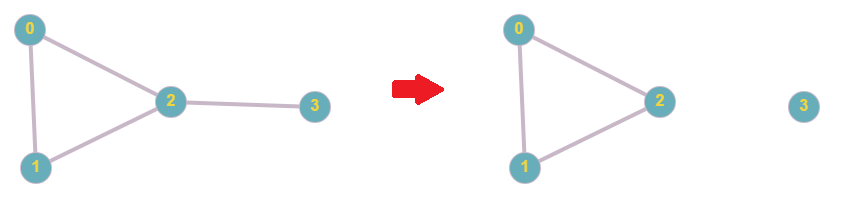

連通性 (Connectivity)
一張任意兩點接連通的圖叫做連通圖，在實際情況，例如網路或電力的架設都希望線路是連通的，要是地方壞掉，我們希望影響能越小越好。在圖論中，有算法可以找出去掉那些部分會使得圖變成不連通的，以下詳細說明。
DFS 邊分類
根據 DFS 的順序（時間戳記），對邊進行分類，這些分類在之後的章節會用到。
| 名稱 | 指向 | 無向圖 | 有向圖 |
|---|---|---|---|
| 樹邊 (Tree edge) | 兒子 | 有 | 有 |
| 回邊 (Back edge) | 祖先 | 有 | 有 |
| 前向邊 (Forward edge) | 非兒子的子孫 | 無 | 有 |
| 交錯邊 (Cross edge) | 旁系血親 | 無 | 有 |
無向圖的雙連通
- 點連通度：最少要移除多少個點才會讓整張圖不再連通。
- 邊連通度：最少要移除多少條邊才會讓整張圖不再連通。
- 點雙連通：移除任意一個點後，圖依然是連通的（點連通度 )。
- 邊雙連通：移除任意一個邊後，圖依然是連通的（邊連通度 )。
在之前提到的例子，網路的架設，需要特別注意雙連通的問題，萬一有部分的線路（邊）或是設備（點）損壞，就有可能導致一部分的網路不連通。以下分別從點和邊的角度探討雙連通。
Tarjan 算法：找 函數
Tarjan 算法，可解決許多連通性的問題，最核心的是找出每個點 函數。
- : 點 的深度。
- : 在不經過父親連到自己的 Tree Edge 的情況下，所能到達祖先的最淺深度。
在無向圖中，只會遇到 Tree Edge 和 Back Edge，以下針對兩種情況說明：
-
Edge is a tree edge: 是 的兒子， 可能經由 走到其他祖先，遞迴找尋 ，再更新 。
-
Edge is a back edge: 是 的祖先，更新 。
1 2 3 4 5 6 7 8 9 10 11 12 13 14 15 16 17 18 19 20 21 22 | |
點雙連通：找割點
要判斷一張圖是否點雙連通，就要檢查他是否有割點，如果沒有割點，則這張圖為點雙連通。
割點：給定一張圖 ，如果移除點 及連接 的邊之後，圖 不再連通，點 都被稱為 的一個割點（cut-vertex）或關節點（articulation-vertex, articulation-point)。
根據 函數，以下兩種情況能判斷一個點為割點：
- 非根節點 ：存在一個孩子 。
- 根節點 ：擁有 兩個兒子。
1 2 3 4 5 6 7 8 9 10 11 12 13 14 15 16 17 18 19 20 21 22 23 24 25 26 27 28 | |
這個演算法主要是做 DFS，所以時間複雜度為
邊雙連通：找割邊
和點連通相似，要判斷一張圖是否邊雙連通，就要檢查他是否有割邊，如果沒有割邊，則這張圖為邊雙連通。
割邊：割邊：給定一張圖 ，如果移除邊 ，圖 不再連通，邊 都被稱為 的一個割邊（cut-edge）或橋（bridge)。

樹邊才有可能是橋，其他的邊拔除仍然可以藉由樹邊連通。
根據 函數，以下情況能判斷割邊：
- 樹邊 ： 。
- 代表有 之間存在至少兩條路徑。
1 2 3 4 5 6 7 8 9 10 11 12 13 14 15 16 17 18 19 20 21 22 23 24 25 26 27 28 29 30 31 32 33 34 35 36 37 | |
和前面點雙連通相同，時間複雜度為
重邊處理
如果不處理重邊，有可能讓一條邊從非割邊判成割邊。
處理方式為用 set,map 存邊的兩點編號，當遇到一條往父親的邊 ，如果出現過相同起始點的邊 ，那麼 不是樹邊，可以透過 回到父親。
雙連通元件
- 連通元件：一張圖 有很多子圖，如果一個子圖 是連通的，我們稱之為連通元件（connected component)，如果一個連通元件滿足 "加上任意一個其他的點就不再連通"，則稱這樣的連通元件是 "極大的"(maximal)。
- 邊雙連通元件：如果一張的某個子圖是一張邊雙連通圖，我們就成這張子圖為邊連通元子圖（bi-edge-connected graph）或邊雙連通元件（bi-edge-connected component)。
- 點雙連通元件：如果一張的某個子圖是一張點雙連通圖，我們就成這張子圖為點連通元子圖（bi-vertex-connected graph）或點雙連通元件（bi-vertex-connected component)。
一般來說，我們會討論極大的連通元件，以下所有的連通元件都是極大的。
要求出一張圖的所有邊雙連通元件，只要拔掉所有橋，剩下的圖就是原圖所有的邊連通元件。
至於點連通元件就沒那麼簡單了，因為同一個割點有可能同時存在多的點連通元件內，並且點的相鄰邊不一定不同的點連通元件中，所以我們不能直接拔點拔掉來求出點雙連通元件。
至於為什麼會有這樣的差異，是因為一般的圖是以點為主題，邊用來描敘點和點之間的東西。而點連通問題則是以邊為主體，點用來描述邊和邊之間的關係，後者描述的關係不是二元關係，所以讓問題變得複雜。
那我們就以邊的角度來思考點雙連通元件，對於一個點 ，與父親點 之間有條邊 ，與兒子點 之間有條邊 ，如果 （不計算樹邊），則 和 不在同一個點連通元件內，反之 和 在同一個點雙連通元件內。根據以上性質，我們可以在 DFS 過程中維護一個 stack ，紀錄目前經過的邊，當遇到割點時，可以快速找出點雙連通元件。
1 2 3 4 5 6 7 8 9 10 11 12 13 14 15 16 17 18 19 20 21 22 23 24 25 26 27 28 29 30 31 32 33 34 35 36 37 38 39 40 41 42 43 44 45 46 47 48 49 50 51 | |
這個演算法一樣有做 DFS，並且維護一個 stack，每條邊都會被丟進去一次，因此時間複雜度為 。
有向圖的強連通
談完了無向圖，就來談論有向圖，有向圖的邊具有方向性，因此比無向圖更難達成 "連通" 的性質，於是為了跟無向圖做區分，訂了一個術語 "強連通" 來表示有向圖的連通性。
- 強連通：對於有向圖上的兩點 ，若存在一條路徑從 到 ，以及存在一條路徑從 到 ，則我們稱 兩點強連通（strongly connected)
- 強連通圖：如果一張有向圖上任意兩點皆強連通，則這張圖為強連通圖（strongly connected graph)
- 強連通元件：如果一張圖中的某個子圖是一張強連通圖，我們稱這個子圖為強連通子圖（strongly connected subgraph)，或是強連通元件（strongly connected component, SCC)
強連通為有向圖中很重要的性質，如果將強連通元件各自縮成一點，新圖是一張有向無環圖（Directed Acyclic Graph, DAG)，DAG 有許多強力性質，可以讓圖上的問題變得有解，有些圖論題目一開始會先找出 SCC 來解題。
強連通元件
這裡會介紹兩種做法，Tarjan 和 Kosaraju's algorithm。
Tarjan
Tarjan 的思維如下：SCC 是由一個或多個環組成， 改成維護節點的時間戳，當一個節點深度等於 函數時，代表找到一個 SCC。和找雙連通元件相似，開一個 stack 維護目前走過的點。
以下是程式碼，和上述相似，此算法會做一次 ，時間複雜度為 。
1 2 3 4 5 6 7 8 9 10 11 12 13 14 15 16 17 18 19 20 21 22 23 24 25 26 27 28 29 30 31 32 33 34 35 36 37 38 39 40 41 42 43 44 45 46 47 48 49 50 51 52 53 54 55 56 57 58 59 60 61 62 63 64 65 66 67 68 69 70 71 72 73 74 | |
Kosaraju's algorithm
Kosaraju's algorithm 基於觀察到的兩件事而成，第一件事為將原圖每條邊都反向，得到的新圖，所有 SCC 的位置依舊相同。第二件事為如果我們用 "正確的" 順序遍歷圖，每次遍歷到的點視為同一個 SCC，那麼是有可能可以找出正確的 SCC 的。 我們分成三種情況來討論那樣才是正確的遍歷順序。
- 在同一個 SCC 裡：先拜訪誰都可以，反正另外一個點也會被拜訪到
- 互相都不能走到對方：這種情況也是先拜訪誰都可以，反正毫不相干
- 走的到 ， 走不到 （單向通行）：這種情況只能先走 再走 ，否則先走 的話， 會被認為和 在同一個 SCC 內
所以只要給出一個順序，對於所有只有 走的到 ， 走不到 的點對 都滿足 會比 先被走到，這個演算法就行得通了。基於這個道理，Kosaraju's algorithm 就誕生了：
- 將圖上所有邊反向，得到新圖
- 在圖 上找一個未拜訪過的點 DFS 並且記錄離開的時間戳，DFS 完後，如果還有點未被 DFS，再進行前述動作。
- 依時間戳的離開戳記對點由大到小排序，所得序列即為所求。再根據這個序列在原圖 做 DFS，每次 DFS 到的點形成一個 SCC。
現在來證明這個序列滿足我們的要求：
-
對於圖 G 上任意單向通行的點對 ，在 上會變成單向通行的點對 。
-
如果 先被拜訪，因為 沒辦法做到 ，所以 會先拜訪完畢，因此 的離開戳記會小於 的離開戳記。
-
如果 先被拜訪， 一定會走到 ， 拜訪完畢時， 一定還沒拜訪完畢，因此 的離開戳記依然會小於 的離開戳記。
-
得證 的離開戳記一定會小於 的離開戳記，即 在序列中會在 前面。
以下是程式碼，此算法會做兩次 ，時間複雜度為 ，效率比 Tarjan 低一些，但 Kosaraju's algorithm 較容易實作。
1 2 3 4 5 6 7 8 9 10 11 12 13 14 15 16 17 18 19 20 21 22 23 24 25 26 27 28 29 30 31 32 33 34 35 36 37 38 39 40 41 42 43 44 45 46 47 48 49 50 51 52 53 54 | |
例題
- 割點模板題
- 割邊模板題
- 雙連通元件
- 強連通元件